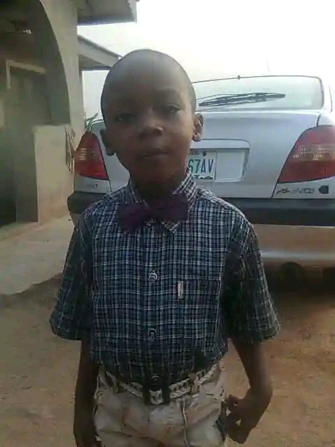
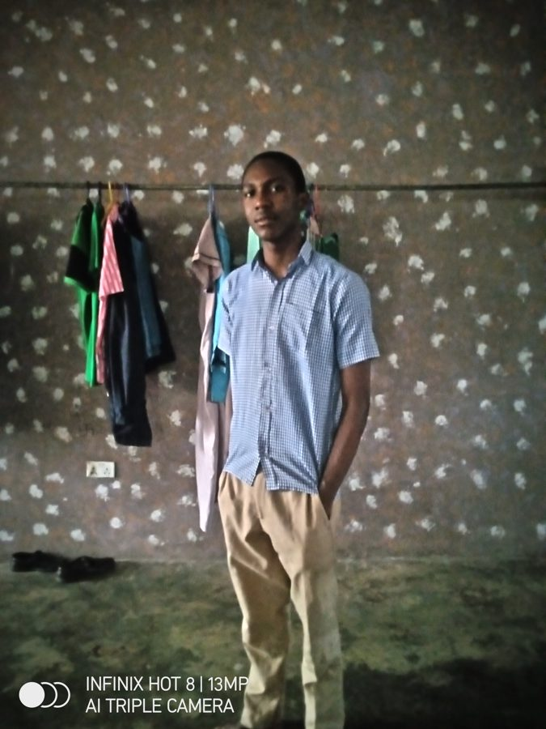
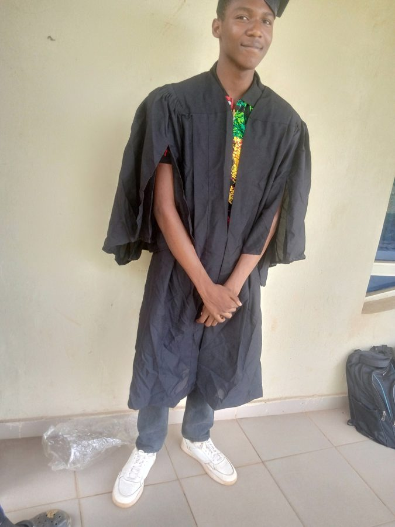

A few stops along the way — from a kid in front of a camera to building things on the internet.

Long before laptops and Linux terminals, there was just this — a kid who had no idea what was coming.

This photo was taken just before I finished secondary school — the last stretch before everything changed.

The day I officially became a student — the start of studying ICT at the University of Ilesa.
These days I split my time between coursework, running Silas Edge (graphic design & digital marketing), and teaching myself web development — HTML, CSS, Python, Flask — plus way too much time tinkering with Linux.